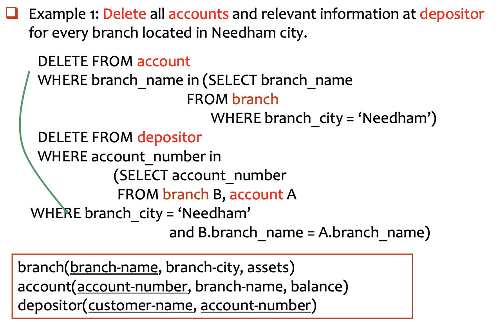
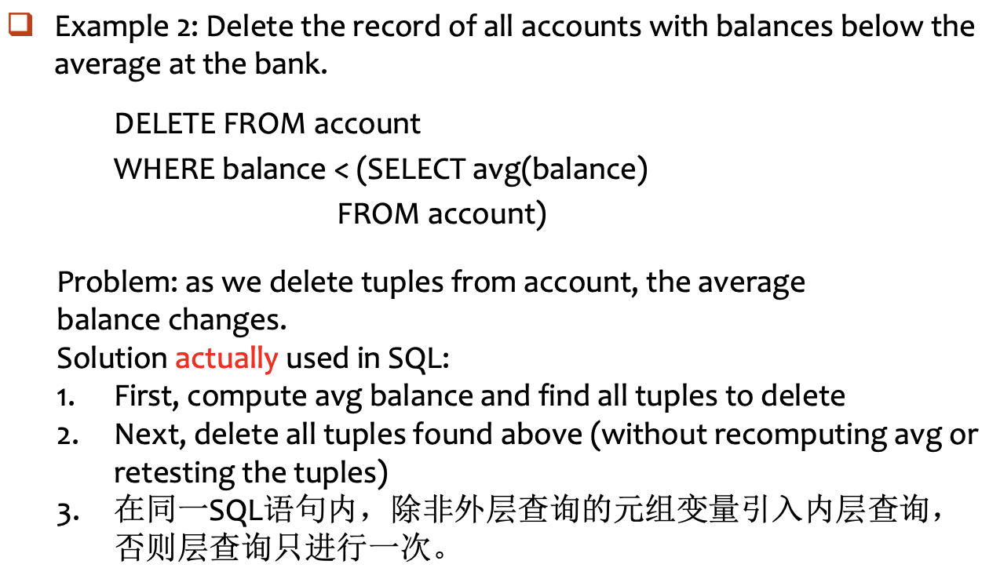
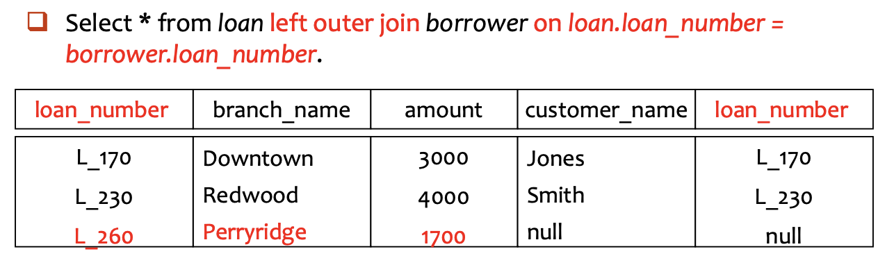
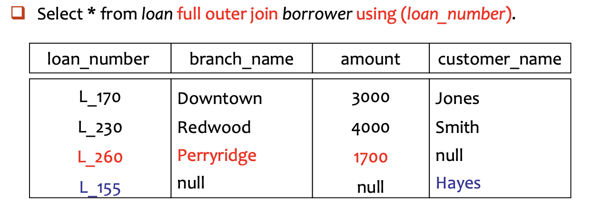

SQL¶
SQL includes several parts:
- Data-Definition Language (DDL)
- Data-Manipulation Language (DML)
- Data-Control Language (DCL)
3.1 Data Definition Language¶
Example
CREATE TABLE branch
(branch_name char(15) not null,
branch_city varchar(30),
assets numeric(8,2),
primary key (branch_name));
Domain Types in SQL¶
- 字符串类型
char(n): 定长字符串- 用户指定长度 \(n\)
- 如果存储的内容不足 \(n\) 个字符，系统通常会用空格填充至 \(n\) 位
- 适用于长度非常固定的数据（如：身份证号、邮编）
varchar(n): 变长字符串- 用户指定最大长度 \(n\)
- 实际存储多少个字符就占用多少空间（外加少量开销记录长度）
- 更具灵活性，是存储姓名、地址等最常用的类型
- 整数类型
int: 整数- 机器相关的（machine-dependent），通常指 32 位整数
- 数学整数集的一个有限子集
smallint: 短整数- 比
int占用的存储空间更小，范围也更窄（通常为 16 位）。 - 当确定数值范围很小时，使用它可以节省内存。
- 比
- 精确数值类型
numeric(p, d): 定点数- 用于需要绝对精确的场景（如：财务数据、货币）
- \(p\) (precision): 总位数（精度）
- \(d\) (scale): 小数点后的位数
- 近似数值类型
real,double precision: 浮点数- 精度取决于机器的具体实现
double precision（双精度）比real提供更高的精度
float(n): 指定精度的浮点数- 参数 \(n\) 指定了至少要保留的精度位数（二进制位）
- 日期与时间类型
date: 仅包含日期（年、月、日）- 格式：
YYYY-MM-DD（4位年-2位月-2位日）（date '2007-02-27'）
- 格式：
time: 仅包含时间（时、分、秒）- 格式：
HH:MM:SS，秒可以包含小数（time '11:18:16'或time '11:18:16.28'）
- 格式：
timestamp: 日期 + 时间的结合体。- 包含：年、月、日、时、分、秒（
timestamp '2011-03-17 11:18:16.28'）
- 包含：年、月、日、时、分、秒（
Create Table¶
CREATE TABLE r (A_1 D_1, A_2 D_2, ..., A_n D_n,
(integrity constraint_1),
...,
(integrity constraint_k));
- \(r\)：关系名（表名）
- \(A_i\)：属性名（列名）
- \(D_i\)：数据类型（即该列存放什么样的数据，如
int,varchar等）。 - 完整性约束：用于确保数据库中的数据是准确、可靠的
Integrity Constraints¶
- Not null：强制该列不允许出现空值（NULL）。
- Primary key (\(A_1, \dots, A_n\))：主键
- 唯一标识表中的每一行
- 主键列的值必须唯一，且自动包含
not null属性（SQL-92 标准及以后）
- Check (\(P\))：自定义检查
- \(P\) 是一个谓词，只有满足条件的记录才能被存入表中
check (assets >= 0)确保银行分行的资产不能为负数
Example
Declare branch_name as the primary key for branch and ensure that the values of assets are non-negative.
Method 1 (表级定义)
CREATE TABLE branch (
branch_name char(20) not null,
branch_city char(30),
assets integer,
primary key (branch_name), -- 显式声明主键
check (assets >= 0) -- 显式声明检查逻辑
);
- 适合定义复合主键（即主键由多个列共同组成，如
primary key (ID, Name)）
Method 2（列级定义）
CREATE TABLE branch2 (
branch_name char(20) primary key, -- 简洁
branch_city char(30),
assets integer,
check (assets >= 0)
);
- 优点：语法更简洁，一眼就能看出哪一列是核心主键。
Drop and Alter Table¶
DROP TABLE r
- The drop table command deletes all information about the dropped relation from the database
ALTER TABLE r ADD A D;
ALTER TABLE r ADD (A_1 D_1, ..., A_n D_n);
ALTER TABLE loan ADD loan_date date;
- The alter table command is used to add attributes to an existing relation.
- All tuples in the relation are assigned null as the value for the new attribute.
ALTER TABLE r DROP A
ALTER TABLE branch MODIFY (branch_name char(30), assets not null);
- The alter table command can also be used to drop attributes of a relation.
- The alter table command can also be used to modify attributes of a relation.
Create Index¶
创建索引的语法：CREATE INDEX <索引名> ON <表名> (<属性列表>);
CREATE INDEX b_index ON branch (branch_name);
CREATE INDEX cust_strt_city_index ON customer (customer_city, customer_street);
- 在 branch 表的 branch_name 列上建索引，加速按分行名查找；同时在城市和街道上建索引
- 注意：复合索引的列顺序很重要，通常把过滤性最强的列放在前面
创建唯一索引的语法：CREATE UNIQUE INDEX <i-name> ON <table-name> (<attribute-list>)
- 功能：加速查询, 并要求索引列的值不能重复
- 用途：用于指定候选键（Candidate Key）
CREATE UNIQUE INDEX uni_acnt_index ON account (account_number);
- 确保账号（account_number）不会出现重复，起到了数据校验的作用
删除索引的语法：DROP INDEX <索引名>
3.2 Basic Structure¶
The Select Clause¶
SELECT branch_name FROM loan; --默认保留重复
SELECT distinct branch_name FROM loan; --强制去重
SELECT all branch_name FROM loan; --保留重复
- SQL names are case insensitive, i.e., you can use capital or small letters.
- SQL allows duplicates in relations as well as in query results. (default)
SELECT * FROM loan;
An asterisk * in the select clause denotes all attributes.
SELECT 不仅仅能读取原始数据，还能在读取的过程中进行实时计算
SELECT loan_number, branch_name, amount * 100
FROM loan;
- 查询结果会展示原有的
loan_number和branch_name，但第三列展示的是amount放大 100 倍后的结果
The Where Clause¶
- The
WHEREclause specifies conditions that the result must satisfy.
SELECT loan_number
FROM loan
WHERE branch_name = 'Perryridge' AND mount >1200;
The From Clause¶
- The
FROMclause lists the ralations involved in the query.
Find the Cartesian product: \(\text{borrower}\times\text{loan}\)
SELECT * FROM borrower, loan;
SELECT customer_name, borrower.loan_number, amount
FROM borrower, loan
WHERE borrower.loan_number = loan.loan_number
AND branch_name = 'Perryridge';
The Rename Operation¶
- Tuple variables are defined in the
FROMclause via the use of theasclause- For simplification
- For discrimination
SELECT customer_name, T.loan_number, S.amount
FROM borrower as T, loan as S
WHERE T.loan_number = S.loan_number;
String Operations¶
- 字符串匹配（string matching）
%: 匹配任意长度的字符串- 查找名字中包含“泽”字的客户：
WHERE customer_name LIKE '%泽%' - 查找名字正好就是 "Main%" 的用户：
LIKE 'Main\%' escape '\'
- 查找名字中包含“泽”字的客户：
_: 匹配单个任意字符
- 字符串拼接 (Concatenation)
- 双竖线
||，将多个字符串“粘”在一起形成新的字符串 SELECT '客户名=' || customer_name FROM customer
- 双竖线
- 大小写转换 (Case Conversion)
lower(s)：将字符串s中的所有字母转为小写。upper(s)：将字符串s中的所有字母转为大写。- 用于“大小写不敏感”的搜索，例如
WHERE upper(name) = 'APPLE'
- 计算字符串长度 (String Length)
- 提取子串 (Extracting Substrings)
Ordering the Display of Tuples¶
ORDER BY 通常放在 SQL 语句的最后面，用来指定根据哪一列（或哪几列）进行排序
SELECT * FROM customer
ORDER BY customer_city, customer_street desc, customer_name;
排序遵循优先级原则：
- 第一优先级：先按
customer_city升序排列（默认 ASC） - 第二优先级：如果在同一城市，则按
customer_street降序排列 (desc) - 第三优先级：如果城市和街道都一样，再按
customer_name升序排列
Duplicates¶
- Multiset多重集 versions of some relational algebra operators, including \(\sigma_{\theta},\Pi_A,\times\), which support the multiset.
- 选择、投影、笛卡尔积都默认不会进行去重操作
3.3 Set Operations¶
以下操作会自动去重，如果要保留重复的行，需要加上 ALL
UNION(\(\cup\))：合并两个查询结果INTERSECT(\(\cap\))：只保留同时存在于两个查询结果中的行EXCEPT(\(-\))：从第一个查询结果中减去第二个查询结果中也存在的行
Example 1: Find all customers who have a loan or an account or both.
(SELECT customer_name FROM depositor)
UNION
(SELECT customer_name FROM borrower)
Example 2: Find all customers who have both a loan and an account.
(SELECT customer_name FROM depositor)
INTERSECT
(SELECT customer_name FROM borrower)
Example 3: Find all customers who have an account but no loan.
(SELECT customer_name FROM depositor)
EXCEPT
(SELECT customer_name FROM borrower)
3.4 Aggregate Functions¶
avg(col): average valuemin(col): minimum valuemax(col): maximum valuesum(col): sum of valuescount(col): number of values
Example1¶
SELECT avg(balance) avg_bal
FROM account
WHERE branch_name = 'Perryridge'
常见错误：
SELECT branch_name, avg(balance) avg_bal
FROM account
WHERE branch_name = 'Perryridge'
avg(balance)返回的是一个数值（符合条件的所有行的平均值）branch_name在这里是一个属性列，它包含多行数据- 数据库无法在一行结果里既显示一个单一的平均值，又显示多行原始的支行名称
Example2¶
Find the average account balance for each branch
SELECT branch_name, avg(balance) avg_bal
FROM account
GROUP BY branch_name;
Example3¶
Find the number of depositors for each branch.
SELECT branch_name, count(customer_name) tot_num
FROM depositor, account
WHERE depositor.account_number = account.account_number
GROUP BY branch_name
Example4 - Having Clause¶
Find the names of all branches located in city Brooklyn where the average account balance is more than \(\$1200\).
SELECT A.branch_name, avg (balance)
FROM account A, branch B
WHERE A.branch_name = B.branch_name
AND branch_city = 'Brooklyn' -- 先过滤出布鲁克林的支行
GROUP BY A.branch_name -- 按支行分组
HAVING avg (balance) > 1200; -- 再过滤出平均余额大于 1200 的组
Summary¶
The execution order of SELECT:
From -> where -> group (aggregate) -> having -> select -> distinct -> order by
3.5 Null Values¶
- The result of any arithmetic expression involving "null" is null.
- Any comparison with null returns "unknown".
- Result of where clause predicate is treated as false if it evaluates to unknown.
Three-valued Logic: true, false, unknown
OR :
- unknown OR true = true
- unknown OR false = unknown
- unknown OR unknown = unknown
AND :
- true AND unknown = unknown
- false AND unknown = false
- unknown AND unknown = unknown
NOT :
- NOT unknown = unknown
The predicate is null, is not null can be used to check for null values.
- 错误示范：
WHERE amount = null- 原因：任何值与 NULL 进行比较，结果都是 unknown。根据三值逻辑，WHERE 会过滤掉 unknown，所以该语句查不到任何结果
Null values and Aggregates
- 原因：任何值与 NULL 进行比较，结果都是 unknown。根据三值逻辑，WHERE 会过滤掉 unknown，所以该语句查不到任何结果
- 基本规则：直接忽略
SUM(amount)会自动跳过那些amount为NULL的行- 如果表里所有的
amount都是NULL，那么结果是NULL
- 例外：
COUNT(*)COUNT(*)统计的是行数。即使某一行全是NULL，它也会被算作一行
3.6 Nested Queries¶
Nested Subqueries¶
- A subquery is a
select_from_whereexpression that is nested within another query.
Example 1: Find all customers who have both an account and a loan at the bank.
SELECT distinct customer_name
FROM borrower
WHERE customer_name in (SELECT customer_name
FROM depositor);
Example 2: Find all customers who have loans at a bank but do not have an account at the bank.
SELECT distinct customer_name
FROM borrower
WHERE customer_name not in (SELECT customer_name
FROM depositor);
Example 3: Find all customers who have both an account and a loan at the Perryridge branch.
-- Query1
SELECT distinct customer_name
FROM borrower B, loan L
WHERE B.loan_number = L.loan_number and
branch_name = "Perryridge" and
(branch_name, customer_name) in
(SELECT branch_name, customer_name
FROM depositor D, account A
WHERE D.account_number = A.account_number);
-- Query2
SELECT distinct customer_name
FROM borrower B, loan L
WHERE B.loan_number = L.loan_number and
branch_name = "Perryridge" and
customer_name in
(SELECT customer_name
FROM depositor D, account A
WHERE D.account_number = A.account_number and branch_name = "Perryridge");
-- Query3
SELECT distinct customer_name
FROM borrower B, loan as t
WHERE B.loan_number = t.loan_number and
branch_name = "Perryridge" and
customer_name in
(SELECT customer_name
FROM depositor D, account A
WHERE D.account_number = A.account_number
and branch_name = t.branch_name);
Example 4: Find the account_number with the maximum balance for every branch.
SELECT account_number, balance
FROM account
WHERE (branch_name, balance) IN (
SELECT branch_name, max(balance)
FROM account
GROUP BY branch_name
);
Set Comparison¶
Some Clause¶
- \(C\)：你要比较的值
- \(<comp>\)：比较操作符（如 \(<, \le, >, =, \ne\)）
- \(r\)：子查询返回的结果集合
- 含义：在集合 \(r\) 中，存在至少一个元组 \(t\)，使得比较成立
All Clause¶
Example: Find the names of all branches that have greater assets than all branches located in Brooklyn.
-- Query1
SELECT branch_name
FROM branch
WHERE assets > all
(SELECT assets FROM branch WHERE branch_city = "Brooklyn");
-- Query2
SELECT branch_name
FROM branch
WHERE assets >
(SELECT max(assets) FROM branch WHERE branch_city = "Brooklyn");
Test for Empty Relations¶
- The exists construct returns the value true if the argument subquery is non-empty.
Example: Find all customers who have accounts at all branches located in city Brooklyn.
SELECT distinct S.customer_name
FROM depositor as S
WHERE not exists (
SELECT branch_name
FROM branch
WHERE branch_city = "Brooklyn"
EXCEPT
(SELECT distinct R.branch_name
FROM depositor as T, account as R
WHERE T.account_number = R.account_number
and S.customer_name = T.customer_name));
Test for Absence of Duplicate Tuples¶
- The unique construct tests whether a subquery has any duplicate tuples in its result.
Find all customers who have at most one account at the Perryridge branch.
SELECT customer_name
FROM depositor as T
WHERE unique
(SELECT R.customer_name
FROM account, depositor as R
WHERE T.customer_name = R.customer_name and
R.account_number = account.account_number
and account.branch_name = 'Perryridge');
3.7 Views¶
Privide a mechanism to hide certain data from the view of certain users.
- Security
- Easy to use, support logical independent
-- 方式一（直接使用查询中的列名）
CREATE VIEW <v_name> AS
SELECT c1, c2, ... FROM ...
-- 方式二（自定义视图列名）
CREATE VIEW <v_name> (c1, c2, ...) AS
SELECT e1, e2, ... FROM ...
-- 删除视图
DROP VIEW <V_NAME>
Example
CREAT view all_customer as
((SELECT branch_name, customer_name
FROM depositor, account
WHERE depositor.account_number = account.account_number)
union
(SELECT branch_name, customer_name
FROM borrower, loan
WHERE borrower.loan_number = loan.loan_number))
- Then we get view:
all_customer (branch_name, customer_name)
3.8 Derived Relations¶
派生关系（Derived Relations）：在 FROM 子句中嵌套子查询
Example: Find the average account balance of those branches where the average account balance is greater than \(\$500\).
- Query 1
SELECT branch_name, avg_bal
FROM (SELECT branch_name, avg(balance)
FROM account
GROUP BY branch_name)
as result(branch_name, avg_bal)
WHERE avg_bal > 500;
- Query 2
SELECT branch_name, avg(balance)
FROM account
GROUP BY branch_name
HAVING avg(balance) > 500;
不管是否被引用，导出表（或称嵌套表）必须给出别名
SELECT TT.sno, sname, c_num
FROM (SELECT sno, count(cno) as c_num
FROM enroll
GROUP BY sno) as TT, student S
WHERE TT.sno = S.sno and c_num >10;
With Clause¶
- The WITH clause allows views to be defined locally for a query, rather than globally
Example
Find all accounts with the maximum balance.
-- Define a local view
WITH max_balance(value) as
SELECT max(balance)
FROM account
-- Use the local view
SELECT account_number
FROM account, max_balance
WHERE account.balance = max_balance.value
Find all branches where the total account deposit is greater than the average of the total account deposits at all branches.
WITH branch_total(branch_name, a_bra_total) as
SELECT branch_name, sum(balance)
FROM account
GROUP BY branch_name
WITH total_avg(value) as
SELECT avg(a_bra_total)
FROM branch_total
SELECT branch_name, a_bra_total
FROM branch_total A, total_avg B
WHERE A.a_bra_total >= B.value
3.9 Modification of the Database¶
3.9.1 Deletion¶
Formal form:
DELETE FROM <table | view>
[ WHERE <condition> ]
Example Queries


3.9.2 Insertion¶
Format:
INSERT INTO <table|view>[(c1, c2,…)]
VALUES (e1, e2, …)
INSERT INTO <table|view>[(c1, c2,…)]
SELECT e1, e2, …
FROM …
- The "select from where" statement is fully evaluated before any of its results are inserted into the relation.
Example
Example 1: Add a new tuple to account with balance set to null.
INSERT INTO account
VALUES (‘A_777’, ‘Perryridge’, null)
-- or equivalently
INSERT INTO account (account_number, branch_name)
VALUES (‘A_777’, ‘Perryridge’)
Example 2: Provide as a gift for all loan customers of the Perryridge branch, a $200 savings account. Let the loan number serve as the account number for the new savings account.
- Add one record to account and depositor.
-- Step 1: insert into account
INSERT INTO account
SELECT loan_number, branch_name, 200
FROM loan
WHERE branch_name = ‘Perryridge’
-- Step 2: insert into depositor
INSERT INTO depositor
SELECT customer_name, A.loan_number
FROM loan A, borrower B
WHERE A.branch_name = ‘Perryridge’ and A.loan_number = B.loan_number
3.9.3 Updates¶
Format of update statement:
UPDATE <table | view>
SET <c1 = e1 [, c2 = e2, …]> [WHERE <condition>]
Case Statement for Conditional Updates¶
Increase all accounts with balances over $10,000 by 6%, and all other accounts receive 5%
UPDATE account
SET balance = case
when balance <= 10000
then balance * 1.05
else balance * 1.06
end
Update of a View¶
Create a view of all loan data in loan relation, hiding the amount attribute.
CREATE VIEW branch_loan as
SELECT branch_name, loan_number
FROM loan
- 建立在单个基本表上的视图，且视图的列对应表的列，称为“行列视图”
Add a new tuple to branch_loan.
INSERT INTO branch_loan
VALUES (‘Perryridge’, ‘L-307’)
-- This insertion will be translated into:
INSERT INTO loan
VALUES (‘L-307’, ‘Perryridge’, null)
- Updates on more complex views are difficult or impossible to translate, and hence are disallowed（只有行列视图，可更新数据）
- View 是虚表，对其进行的所有操作都将转化为对基表的操作
Transactions¶
A transaction is a sequence of queries and data update statements executed as a single logical unit.
- Transactions are started implicitly and terminated by one of
- COMMIT WORK: makes all updates of the transaction permanent in the database.
- ROLLBACK WORK: undoes all updates performed by the transaction.
The four properties of transaction are required: atomicity, isolation, consistency, durability
3.10 Joined Relations¶
- Join operations take as input two relations and return as a result another relation.
- Join condition – defines which tuples in the two relations match, and what attributes are present in the result of the join.
- natural : 查找两张表中所有同名的列，并用这些列进行等值匹配
- on \<predicate>
- using (A1, A2, ..., An) : 用这些同名列来进行等值匹配
- Join type – defines how tuples in each relation that do not match any tuple in the other relation (based on the join condition) are treated.
- inner join (\(\bowtie\)):
只保留那些在两张表中都能找到匹配的行，没有匹配项的行会被完全丢弃。 - left outer join :
保留左表的所有行。如果左表的某一行没有找到匹配，那么结果中该行的右表部分用NULL填充。 - right outer join :
与左外连接相反，保留右表的所有行。如果右表的某一行在左表中没有匹配，那么结果中这一行的左表部分就用NULL填充。 - full outer join :
保留两张表的所有行，没有匹配的部分用NULL填充。
- inner join (\(\bowtie\)):
Format¶
自然连接：R natural {inner join, left join, right join, full join} S
非自然连接：
- R {inner join, left join, right join, full join} S on <连接条件判别式>
- R {inner join, left join, right join, full join} S using (<同名的等值连接 属性名>)
Key word inner, outer is optional.
- Natural join: 以同名属性相等作为连接条件
- Inner join：只输出匹配成功的元组
- Outer join：还要考虑不能匹配的元组
Joined Relations in SQL¶


Example: Find all customers who have either an account or a loan (but not both) at the bank.
ELECT customer_name
FROM (depositor natural full outer join borrower)
WHERE account_number is null or loan_number is null
Synthetic examples¶
Example1¶
Consider the following relational schema: part (id, name, color, weight, sub_part), transfer the following SQL query into the relational algebra expression:
SELECT part2.id
FROM part as part1, part as part2
WHERE part1.id = part2.sub_part AND part1.color = ‘red’ AND part2.color = ‘blue’ AND part1.weight – part2.weight >100
Example2¶
Consider the student database below:
student (student-no, student-name, sex, age, dept-name)
course (course-no, course-name, credit)
study (student-no, course-no, score)
Please give the SQL statements for each of the following requirements:
(1) Find the names of students who have studied course ‘Database System’ and sort results by ascending score.
SELECT student_name
FROM student S, study T, course C
WHERE S.student_no = T.student_no and
T.course_no = C.course_no and
course_name = 'Database System'
ORDER BY score
(2) Find the names of students who get the best score in course ‘Database System’.
SELECT student_name
FROM student S, study T, course C
WHERE S.student_no = T.student_no and
T.course_no = C.course_no and
course_name = ‘Database System’ and
T.score >= (SELECT max(score)
FROM study T, course C
WHERE T.course_no = C.course_no and
course_name = ‘Database System’)
(3) Find the names of courses that have maximum average score.
- Method 1:
SELECT course_name
FROM course
WHERE course_no in
(SELECT course_no
FROM study
GROUP BY course_no
HAVING avg(score) >= all
(SELECT avg(score)
FROM study
GROUP BY course_no))
- Method 2
WITH course_avg(course_no, score_avg) as
SELECT course_no, avg(score)
FROM study
GROUP BY course_no
SELECT course_name
FROM course
WHERE course_no in
(SELECT course_no
FROM course_avg
WHERE score_avg =
(SELECT max(score_avg)
FROM course_avg))